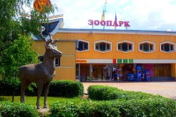
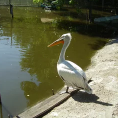

Достопримечательности Липецка


Липецкий зоопарк
Липецкий зоопарк находится в Нижнем парке Липецка. Основан 6 ноября 1973 года. Свою историю Липецкий зоопарк начал в августе 1972 года, когда на базе Нижнего парка создаётся первый в городе живой уголок. Инициатором создания живого уголка выступил председатель горисполкома Н. Г. Яхонтов. На площади более четырёх гектаров размещено более 3500 экземпляров животных и птиц. Представлено более 320 видов, 43 вида животных зоопарка занесены в международную Красную книгу, 20 видов в Красную книгу России, и ещё 20 охраняются в Липецкой области. В зоопарке имеются аквариум, террариум, где проводятся обзорные тематические лекции. В 2006 году открыта площадка контактного зоопарка. С 1993 года зоопарк является членом Евроазиатской ассоциации зоопарков и аквариумов. Липецкий зоопарк сотрудничает с зоопарками Москвы, Санкт-Петербурга, Николаева, Пензы, Перми, обмениваясь животными и различной зоологической информацией. Главное достояние зоопарка — гибрид лигрица, так как в России их всего две — в Липецком и Новосибирском зоопарке. Осенью 2006 года здесь открылся так называемый «контактный детский зоопарк». Он представляет собой большой вольер, в который можно входить детям. В вольере около 10 видов безобидных животных, таких, как кролики, козлята, маленькая лама, куры и другие виды птиц. Дети могут их гладить и кормить. Зоопарк увеличился в размерах почти в два раза, а его посещение стало ещё более интересным. Администрация города выделила для расширения дополнительно три гектара. На новой территории расположился сафари-парк для копытных, а также тематические уголки «Животные Африки» и «Хищники».
Изображения:
 
Липецкий зоопарк на карте: